Workshop: Automation with Relay.app
Introduction
In this workshop, you’ll create an automated workflow using Relay.app that processes consultation inquiries submitted through a Google Form. The automation will:
- Monitor a Google Sheets spreadsheet for new form submissions
- Research the potential client’s company using Google Search
- Use an AI model to generate a professional HTML report on GenAI opportunities
- Email you the report as an attachment
The goal is to build a simple automation that connects different web services with an AI model. With Relay.app’s AI assistant, the whole setup takes just a few minutes.
Part 1: Setting Up Your Google Form and Data Collection
Create Your Project Folder
- In your browser, navigate to drive.google.com
- Click New at the top left, then click New folder
- Name the folder something like
GenAI Consultations - Double-click to open the folder

Build Your Consultation Form
Inside the folder, click New → Google Forms.
In the title field enter:
Consultation InquirySet up the following form questions:
- Question 1: “Name” (Short answer)
- Question 2: “Email” (Short answer)
- Question 3: “What is your company name and primary geographic area?” (Short answer)
- Question 4: “What would you like help with?” (Paragraph)

- When done, click Publish at the top right to make your form live.
Test Your Form and Connect to Sheets
Click the Share button at the top right, then copy the responder link.
Paste that link into a new tab and submit a test response. Try to use a real organization you know. Example:
- Name:
John Doe - Email:
john.doe@example.com - Company:
The Graduate Institute, Geneva - Help needed:
General advice on how to use GenAI to help students
- Name:
Return to the form editor tab and click Responses. You should see your new submission.
Click Link to Sheets → Create to generate a connected spreadsheet.
Open the connected spreadsheet. You should see your test response as a row. Keep this tab open; you’ll need to point Relay.app to this spreadsheet shortly.
Part 2: Building the Automation with Relay.app
2.1 Sign Up for a Relay.app Account
Navigate to relay.app and sign up with the same Google account you used for your Google Form.
You may be asked to add your LinkedIn profile. Feel free to skip this.
2.2 Start Creating a New Workflow
You may land on a page asking you to create an “agent.” You can skip this by going directly to the workflow dashboard at https://run.relay.app/dashboard
On the left-hand sidebar, click the plus icon to create a new Workflow.
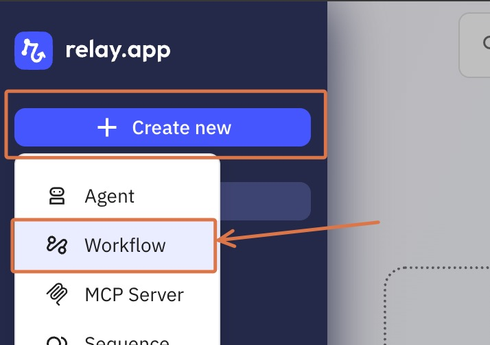
- Relay will open the workflow editor, with an AI assistant panel on the left.
2.3 Use the AI Assistant to Build the Workflow
Rather than configuring each step manually, we’ll let the AI assistant build the workflow from a prompt.
We’ve written the prompt for you below. Writing these prompts takes some practice, but the steps can be described in plain language. You can try chatting with the assistant later to explore what’s possible.
- Copy the prompt below and paste it into the AI assistant text box.
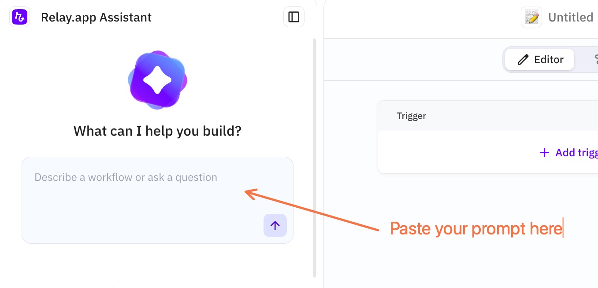
Prompt to paste:
I have a Google spreadsheet that is updated when clients fill out my contact form.
For each new submission, I want a report of genAI opportunities for the client's organization emailed to me.
First, our automation should research the company, using Google search, returning 2-3 results.
Then we will use Gemini Flash to draft a report. The report should be rich, colorful, and professional.
The report file should be created with the plain text file tool, but with an HTML extension.
Finally, an email should be sent to me using the email yourself tool (not gmail), with the report attached. Click send.
The assistant will respond with a plan, then ask you to connect to Google Sheets. Click Connect and log in with the same Google account.
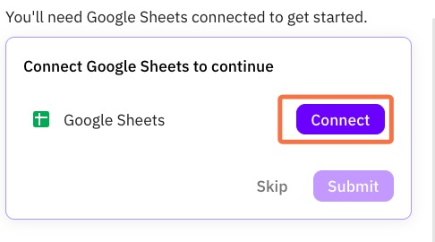
- Google will ask what permissions to grant. Grant all three.
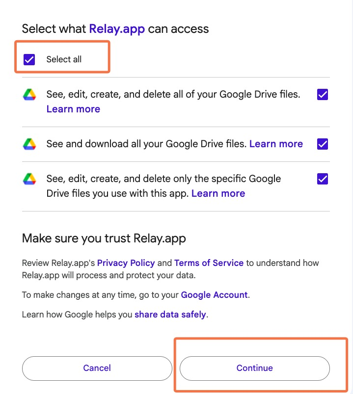
These are broad permissions, but Relay.app is a trusted service that we have vetted. Only actions you explicitly set up will be taken. If you’re concerned, you can create a separate Google account for this workshop.
- Next, select the sheet that holds your contact form responses.
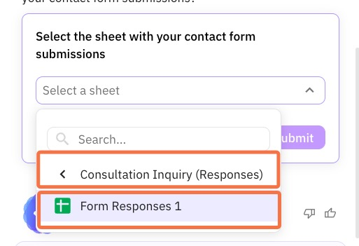
- The assistant will then ask you to test the workflow.
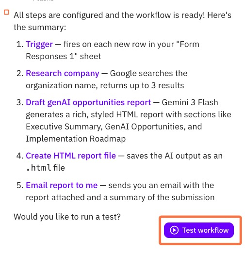
- Click the test button and select the row you submitted earlier. The workflow will run and after a moment you should receive an email with the report attached. To view the HTML report, download it and open it in your browser.
The “Email Yourself” tool only sends to your own address. To email others, you can connect a Gmail or Outlook integration instead.
Below is an example report:
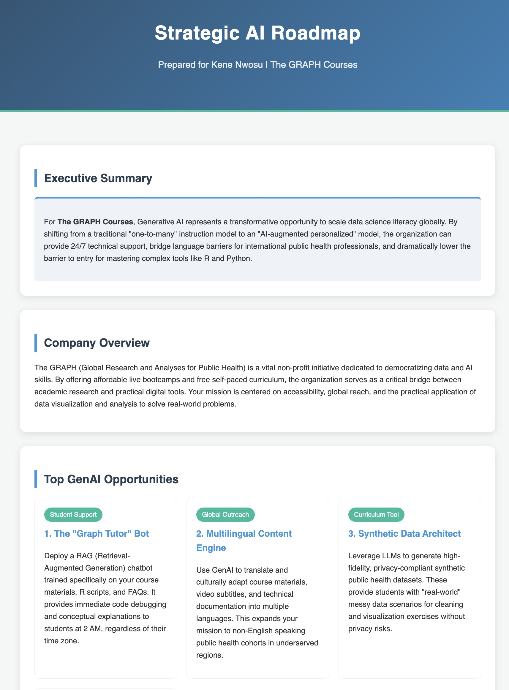
2.4 Make Any Final Adjustments
You may want to tweak the workflow. For example, you could edit the Gemini prompt for a more concise report, or refine the search query.
To learn more about customizing Relay.app automations, see this video (demo starts around minute 7):
2.5 Enable the Workflow
- Once you’re happy with the report, toggle the trigger from Off to On. The toggle turns green and the workflow is live.
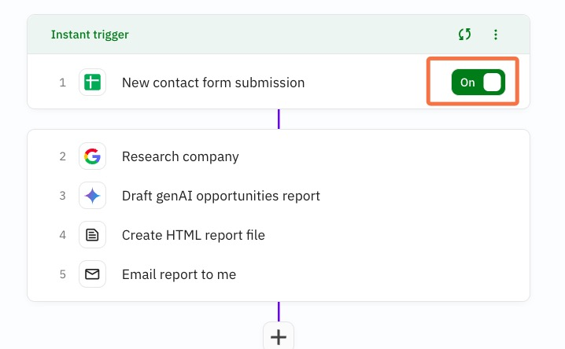
Your automation is now active. Every new form submission will automatically trigger the full workflow.
2.6 For Reference
Here is what each step of the workflow should roughly look like:
Step 1: New contact form submission (trigger). The trigger fires when a new row is added to your “Form Responses 1” sheet.
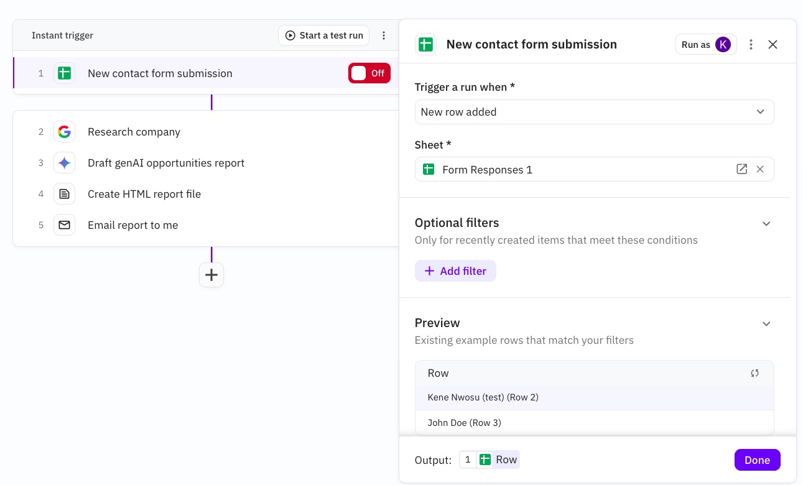
Step 2: Research company. A Google search is run using the company name from the form, returning 2 to 3 results.
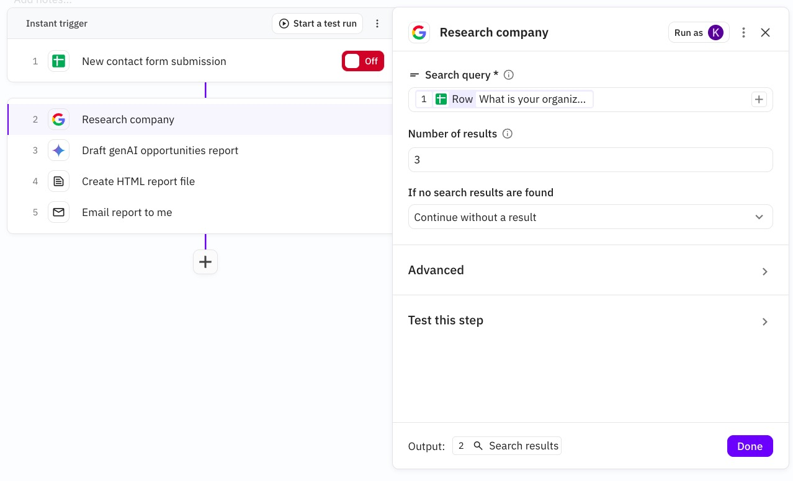
Step 3: Draft GenAI opportunities report. Gemini Flash drafts a professional HTML report based on the search results, with sections covering an executive summary, company overview and top GenAI opportunities.
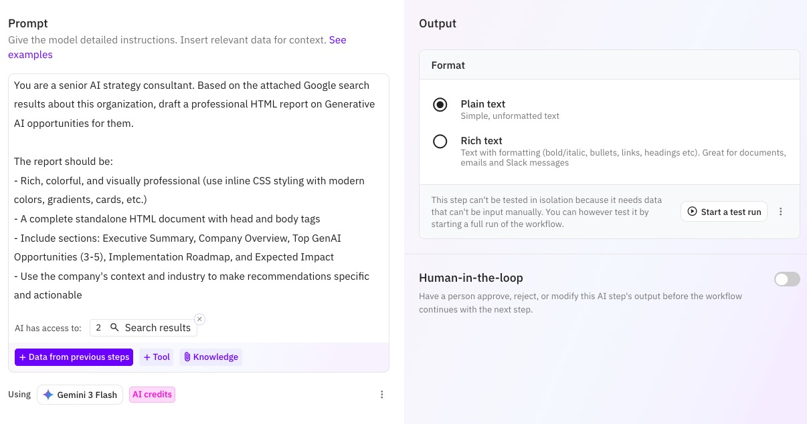
Step 4: Create HTML report file. The AI output is saved as a plain text file with an .html extension, named after the client.
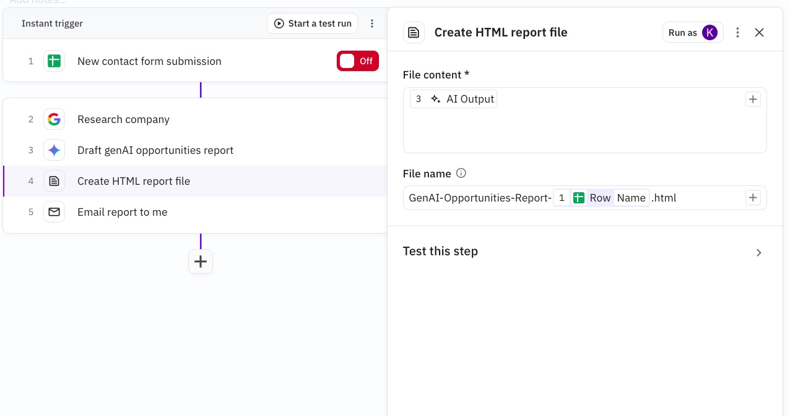
Step 5: Email report to me. The report is emailed to you using the “Email Yourself” tool, with the HTML file attached and a summary of the submission details in the body.
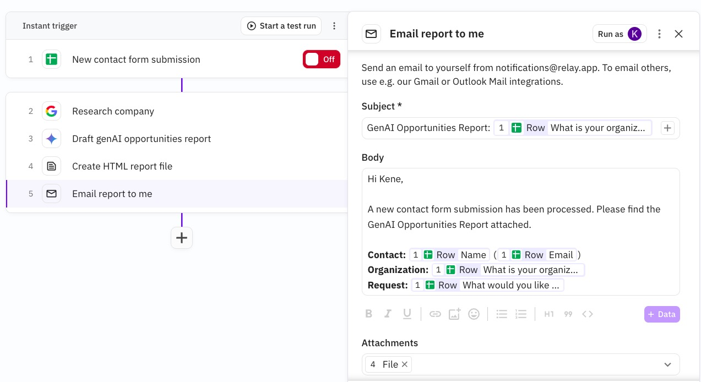
If any step looks wrong, click on it and edit it manually, or describe the fix to the AI in the chat panel on the left. For example, you might say “Change the AI model to Gemini Flash” or “Make the search return only 2 results”.
Part 3: Embedding the Form in Your Website
Get the Embed Code
- Return to your Google Form
- Click the three-dot menu (⋮) in the top right
- Select Embed HTML
- Copy the provided HTML embed code

Add to Your Portfolio Website
You’ll use an LLM to add the form to your portfolio HTML, then push the changes to GitHub.
Copy Your Current Website Code
Go to github.com. Click your profile icon at the top right → Your repositories.

Locate and click on your portfolio repository (it should be called something like
graph-ai-portfolio).Click on the
index.htmlfile.
Copy all the code from the file using the copy button at the top right of the code view.

Ask an LLM to Update the HTML
Go to ChatGPT, Gemini, or your preferred LLM.
Paste a prompt like the one below, filling in your embed code and your current
index.htmlcode where indicated:
I want to update my portfolio website to include a consultation form.
Add a new section called "Contact for Consultation" and embed this Google Form:
[PASTE YOUR GOOGLE FORM EMBED CODE HERE]
Below is my current index.html code. Please return the FULL updated HTML file:
[PASTE YOUR ENTIRE index.html CODE HERE]- Review the LLM’s output to make sure it looks reasonable (e.g., your existing content is still there and a new section has been added).
Update Your Website on GitHub
Back in your repository on GitHub, navigate to
index.htmland click the edit file (pencil) button at the top right.
Select all the existing code in the editor and delete it, then paste in the new HTML from the LLM.
Click the Commit changes button at the top right to save.
Your live site will update automatically. This may take 3 to 5 minutes. You can track the deployment status by clicking the Actions tab in your repository.

Once the build completes, visit your GitHub Pages URL and confirm the consultation form section appears on your site. You may need to hard-refresh the page (Ctrl+Shift+R or Cmd+Shift+R) to bypass your browser’s cache.

Test the Full Pipeline
Now test the entire pipeline end to end.
Visit your live GitHub Pages site and fill out the consultation form. Use a different company name than your earlier test so you can identify the new submission.
Wait a minute or two for Relay.app to pick it up (it uses event-based triggers, so it should be quick).
Check your email for the report and review the HTML attachment.
If a report arrives, your automation is working end to end, from website visitor to delivered report.
Submission
To submit your work, take a screenshot showing your completed workflow in Relay.app (showing all the steps) and upload it to the submission box on the course website.
Optional Challenge: PubMed Literature Monitor (ungraded)
Build an automation that monitors academic literature and sends you a weekly digest. You will:
- Create a PubMed search query for a topic of your choice
- Generate an RSS feed from that search
- Build a Relay.app workflow that checks the feed every Monday, summarizes recent papers, and connects them to your research background
This challenge is less guided, with fewer screenshots. You’ll need to be more independent.
Create Your PubMed RSS Feed
1. Craft a search query
PubMed searches use Boolean operators. You can write one yourself if you’re familiar with the syntax, or use an LLM to help.
Pick a topic, for example:
- Any paper about arboviruses in a top 5 medical journal
- Generative AI and epidemiology
- Clinical trials for a specific disease (e.g., malaria vaccine trials)
Ask an LLM to help you craft the query. For example:
Help me create a PubMed search query using Boolean operators.
Return just the query string I can paste into PubMed.
I will use this to create a weekly RSS feed eventually.
The topic is:
[YOUR TOPIC HERE]Replace [YOUR TOPIC HERE] with the topic you picked. The model will respond with a query string you can copy.
2. Search PubMed and create the RSS feed
- Go to pubmed.ncbi.nlm.nih.gov, paste your query into the search box, and press Search.
Aim for 100 to 1,000 total results. Too broad gives generic papers; too narrow means nothing new each week. Check the result count and refine with the LLM if needed.
- Just below the search bar, click the Create RSS link.
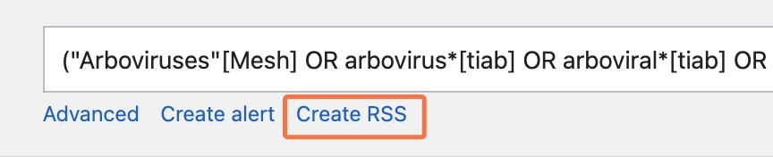
- Change Number of items displayed to 10, then click Create RSS. A URL appears in the Your RSS Feed Link box. Copy it.
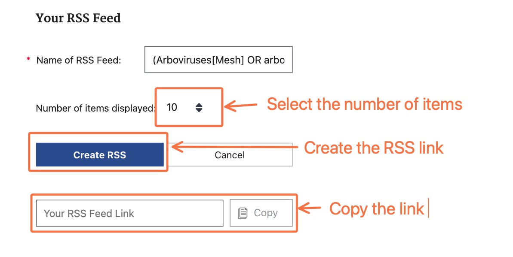
Build the Relay.app Workflow
Create a new workflow in Relay.app as you did before.
Paste the prompt below into the AI assistant, replacing the placeholders with your RSS URL and a short summary of your professional background (you can use an LLM to summarize your CV).
Every Monday morning, we want to get the latest 10 publications from this RSS feed:
[PASTE YOUR PUBMED RSS URL HERE]
Using Gemini Flash, summarize each one in a single line and include the link to the full publication.
Then, at the end of the report, using my CV summary below as context,
mention a few ways any of these publications might be relevant to my own work.
Send the whole thing to me using the Email Yourself tool (not Gmail).
My professional background:
[PASTE YOUR OWN PROFESSIONAL BACKGROUND HERE]- Review the steps, run a test, and if the output looks good, activate the workflow. You’ll now get a literature digest every Monday morning.
To submit, take a screenshot of the workflow and upload it to the submission box on the course website.